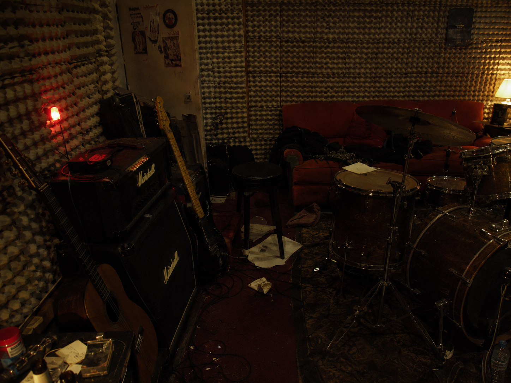
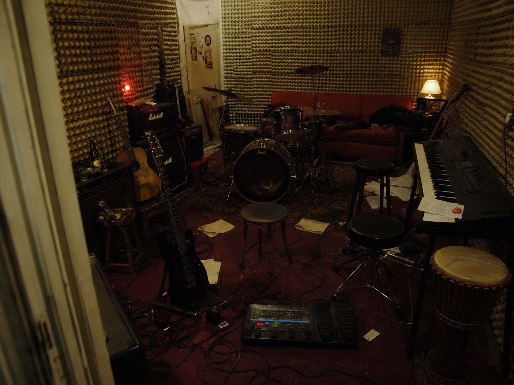
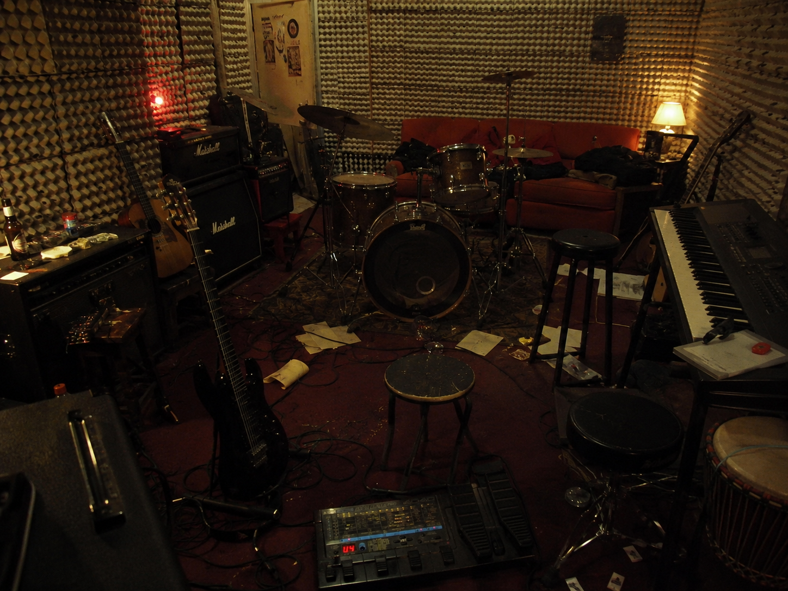
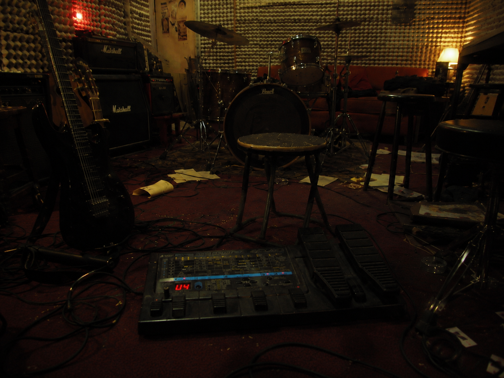
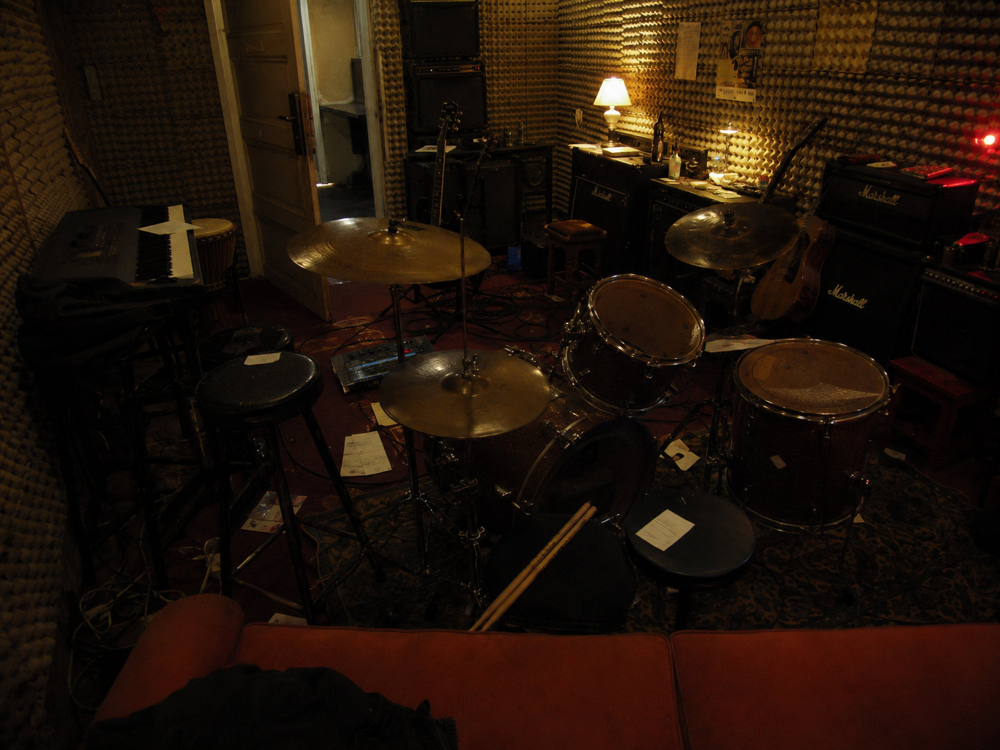
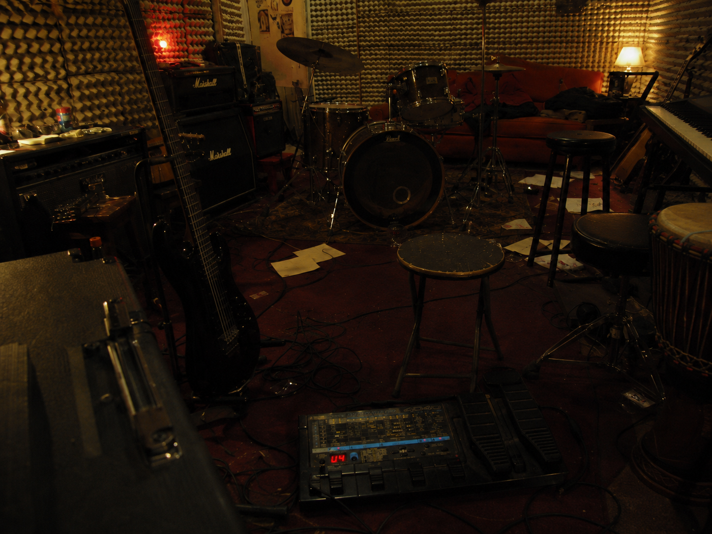
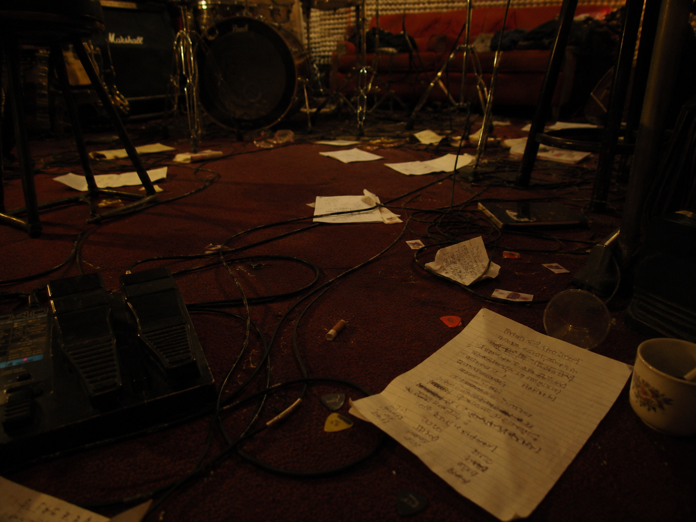
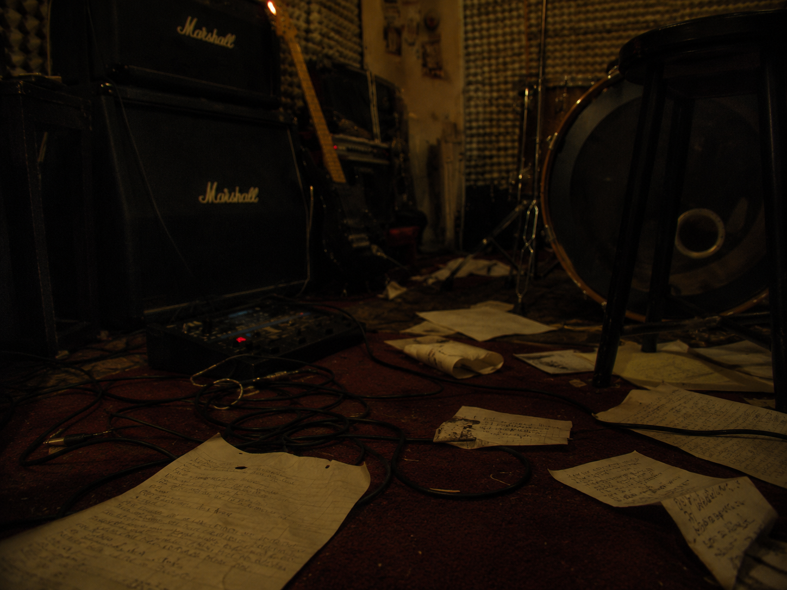
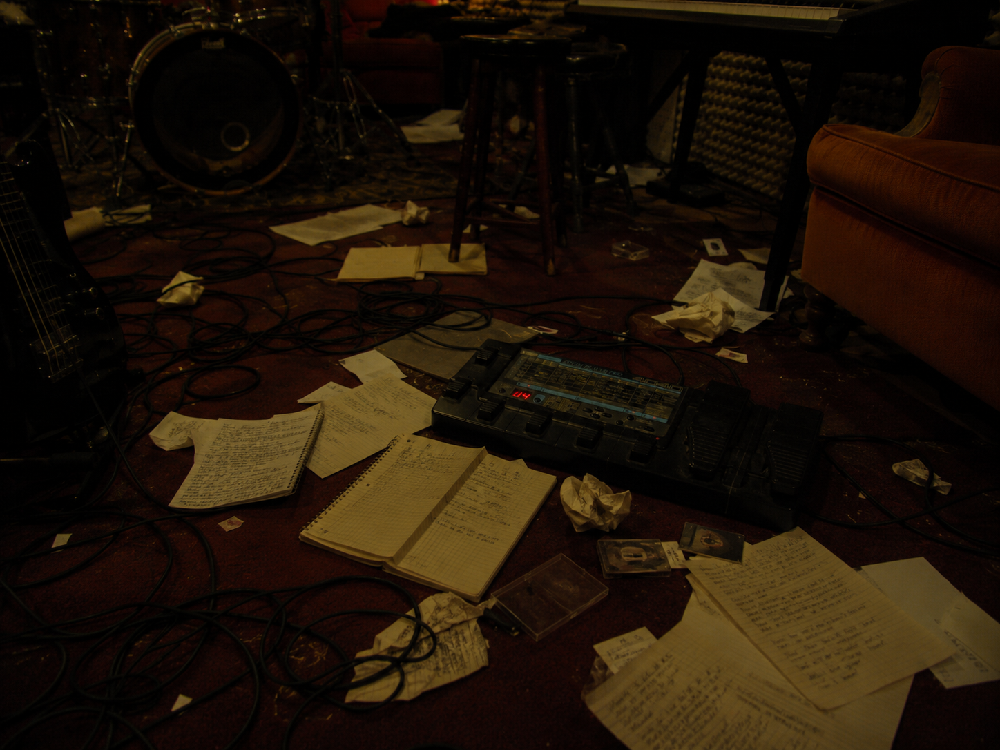
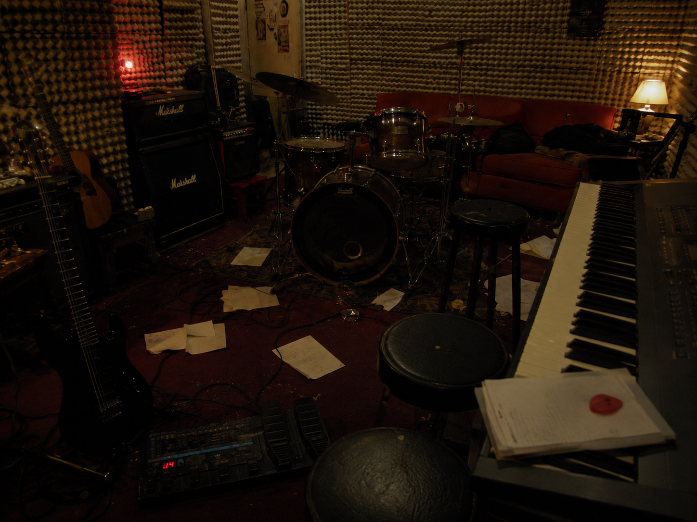

un bar detrás del teatro lope de vega.
copas a doscientas pelas. cerraron el local con la gente dentro. en el encierro, ella se puso a cantar coplas, sola, a capela.
se llamaba noelia.

e son a última merda no blues.

madrid · 1999–2000 · lo que quedó en las cintas

rober
guitarras, pulso y memoria.
noelia
voz, letras, melodías y heridas.
néstor
letras, piano, guitarras y ausencias.
uns berros entre catro paredes.
lo que se recuerda · lo que se olvidó
un bar detrás del teatro lope de vega.
copas a doscientas pelas. cerraron el local con la gente dentro. en el encierro, ella se puso a cantar coplas, sola, a capela.
se llamaba noelia.

siempre de madrugada, a oscuras, con una luz roja siempre encendida.

un sótano bajo un chalet de las rozas.
forrado de cajas de huevos. montado para tocar doom metal; acabó siendo otra cosa.
sesiones de muchas horas que nadie medía.
siete meses, quizá ocho, quizás nueve… no pasaba el tiempo o pasó muy rápido.
fados, coplas, canciones que salían solas — en gallego, en latín, en castellano, en sílabas que no eran de ningún idioma y de todos.
personas a medio querer, relaciones desordenadas, sustancias tóxicas. y en medio, el mejor momento.
un día decidió irse a vivir al extranjero. nunca volvieron a tocar juntos.

sola, sola, me vuelvo a despertar.
archivo · transcripción con lo que se oye
lo que va entre corchetes no se entiende. el olvido también forma parte de la grabación. toca una canción para abrirla.
nota del archivo — {{ c.nota }}

e son a última merda no blues.

nota del archivo — {{ c.nota }}
maldito el día que te conocí.
nota del archivo — {{ c.nota }}

mientras asoman en tus uñas, jirones de mi piel.

nota del archivo — {{ c.nota }}
lo que quedó después
de mucho, de poco, de nada y de todo, de ti y de mí.